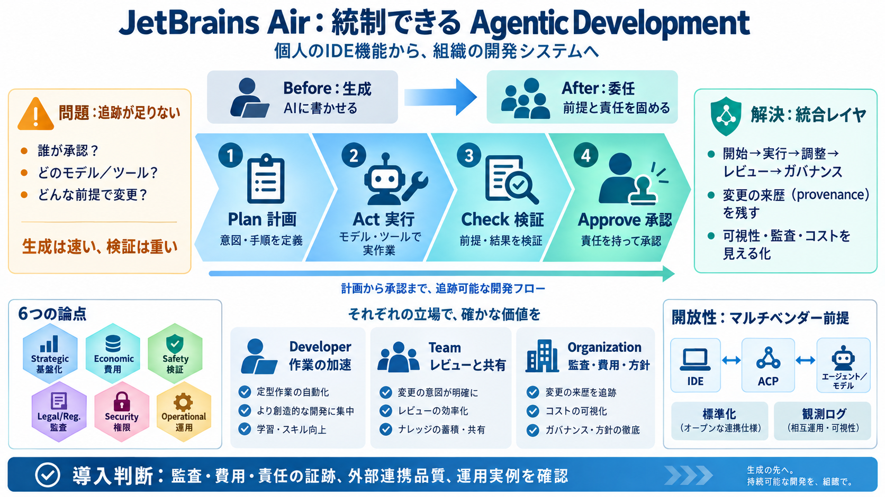

JetBrains Introduces Air, an Open System for Agentic Development
JetBrains argued that as agents take on more of the execution, the bottleneck shifts from producing change to understand…

個人作業 → 統制できる開発
エージェント主導の開発を、IDEの“機能”から組織の“開発システム”へ拡張する構想です。
追跡が足りない
AIが成果物を作っても、「誰が承認したか」「どのモデル／ツールで」「どんな前提で変更が生じたか」の追跡が追いつきません。
生成は速い、検証は重い
明らかな誤りは検知しやすい一方、エージェントは「ほぼ正しいが前提が不整合」な変更も起こし得て、理解と責任が後から重くなります。
統合レイヤを作る
JetBrains Airは「個人のIDE拡張」ではなく、開始→実行→調整→レビュー→ガバナンスまでを一つの流れとして統合する狙いです。
誰に何を渡す？
記事では、開発者・チーム・組織それぞれの機能を統合した提供を目指す、と述べています。
実験と基盤の延長
過去半年の公開実験や、JetBrains Central（制御・実行の仕組み）の発展を踏まえて、統合プロダクト群へ拡張する構想が語られています。
作業→責任へ焦点移動
ボトルネックは「コード生成」から、「検証・理解・説明・所有（ownership）」へ移ります。
見える化が鍵
「誰が承認したか」「データがどこへ流れたか」「何が人間レビューを要するか」などを追える仕組みが設計要件になります。
変更の来歴（provenance）
エージェントが作業しやすくなるほど統制が難しくなるため、変更の来歴を“残す”前提設計が必要になります。
“賢くなるほど楽”ではない
AIが賢くなるほど、見えにくいズレ（前提の不整合）が紛れやすくなり、「検証と責任」を減らしてくれるとは限らない、と警告しています。
単一ベンダーに閉じない
モデルやエージェントは得意分野が異なり、長期で単一選択にコミットすべきではないため、開放性（オープン接続）を前提にします。
ACPで接続を標準化
IDEとエージェント側のハーネス接続を、計画・ロジック・ツール・モデルルーティング・観測まで含め標準化し、透明性を保つ狙いです。
論点は六面体
戦略・経済・安全・法規制／コンプライアンス・セキュリティ・運用の観点で、統合と検証の要件が語られます。
導入判断の要点
実効性は、監査・費用・責任の証跡がどれだけ確実に残るか、外部エージェント／モデル連携の品質、そして詳細仕様と運用実例で左右されます。
References（要点）： ACP（Agent Client Protocol）、ACP Registry、JetBrains Central（制御・実行の仕組み）、agentic development（エージェント主導の開発）／JetBrains Air（構想）に関する公開情報。
JetBrains argued that as agents take on more of the execution, the bottleneck shifts from producing change to understand…
is designed to be multi-vendor, supporting external agents and models via the Agent Client Protocol (ACP) and its regist…
JetBrains brings 26 years of engineering intelligence to the problem, helping developers understand the structure and be…
If your organization's primary concern is agent cost visibility and compliance, the governance tooling you need is still…
### Set rules and permissions Give developers access to the models and agents they need. Set permissions for the whole …